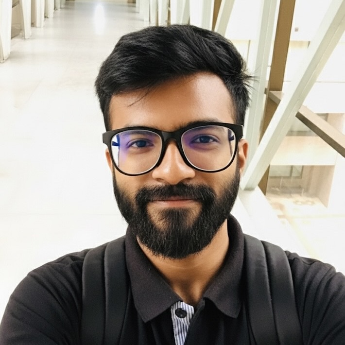
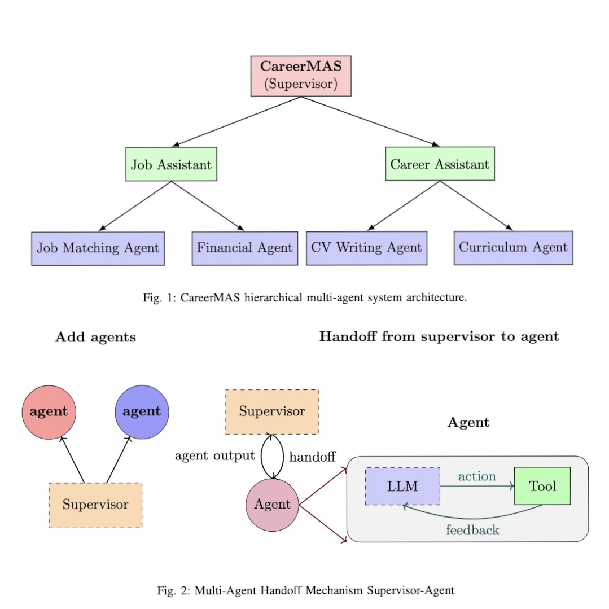
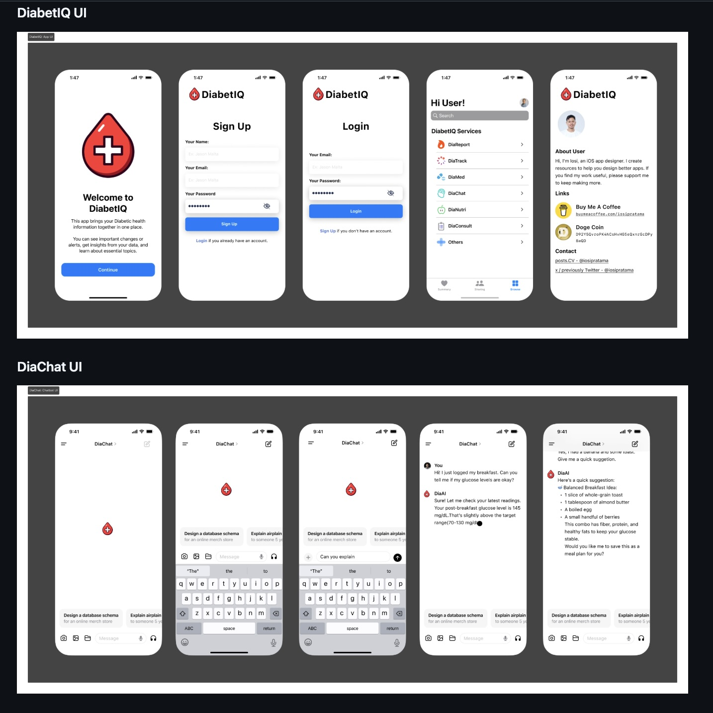
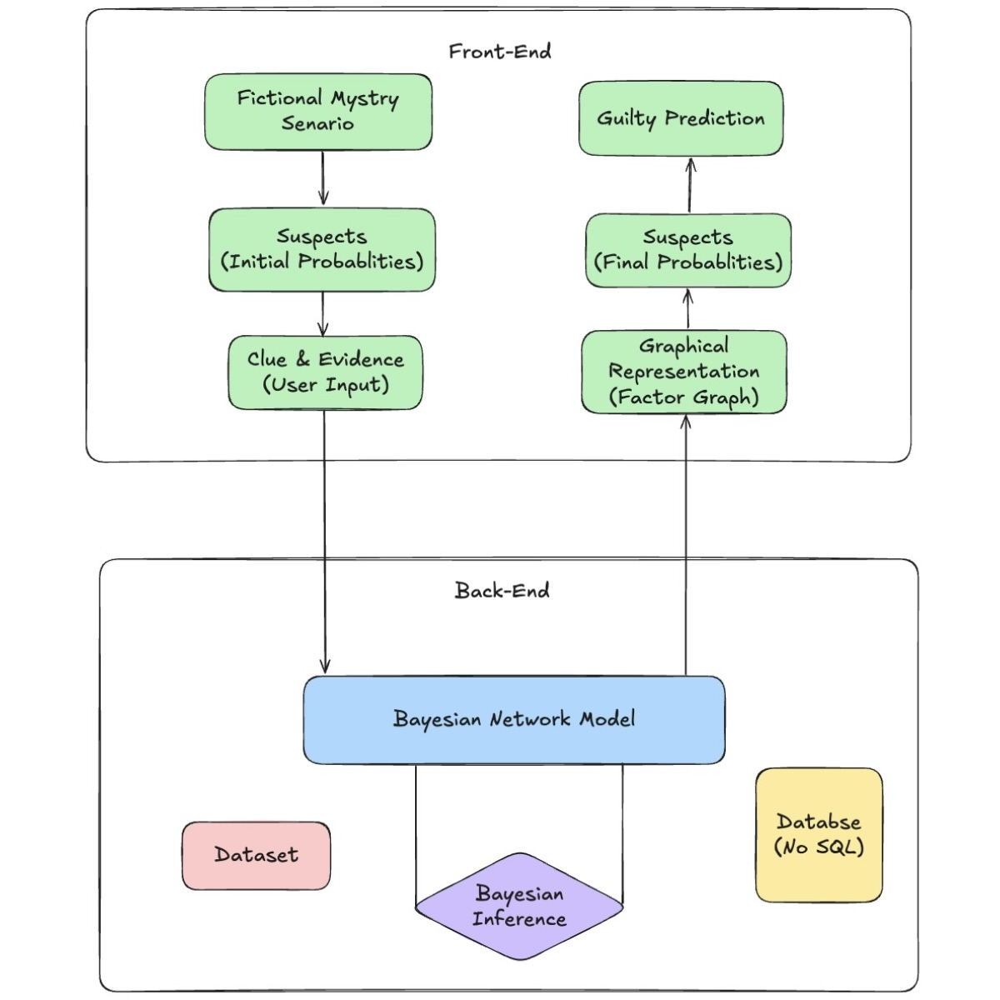
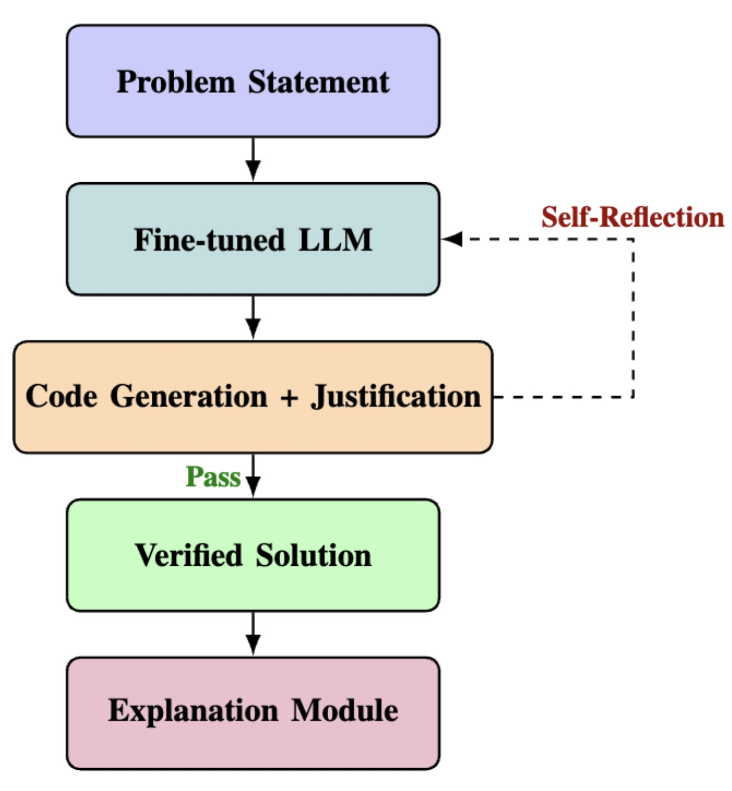
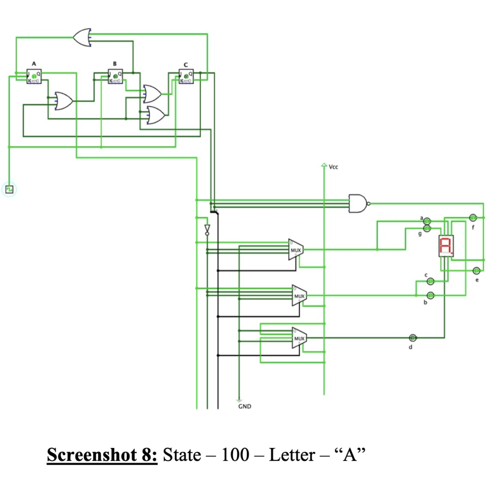

I'm a Computer Science and Engineering undergraduate student at North South University in Dhaka, Bangladesh. I work on artificial intelligence and modern software systems. I serve as the Coordinator and Academic Mentor of the R&D Group and as the Moderator of the Web Group at the NSU ACM Student Chapter.

My research lies at the intersection of Artificial Intelligence and the Internet of Things. I specialize in Deep Learning, with a specific focus on Computer Vision, Natural Language Processing, and Generative AI. Key reports are highlighted below.




